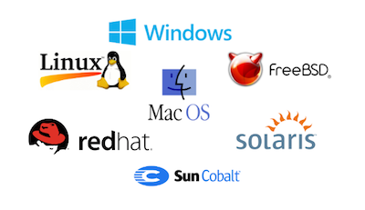

This is a brief overview to the main four Operating Systems (OS) for personal computers. Although there are multiple ones, these four are the one the dominate the market share: Windows, Unix, Linxu and Mac OS. There are multiple types of Operating Systems from server, client, mobile phone - Android and iOS.
Operating Systems is the software that supports a computer's basic functions, such as scheduling tasks, executing applications, and controlling peripherals, among many other important functions.
"With ordinary talent and extraordinary perseverance, all the things are attainable"- Thomas F. Buxton